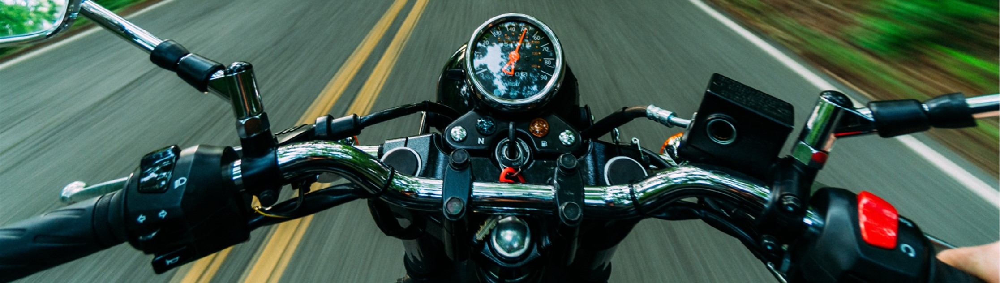

Final Project
The real time simulation of vehicles physics is used extensively in a number of areas including the automotive, video game and racing industries. There are many games that include realistic simulation of cars or other four wheeled vehicles, especially with the prevalence of open world games that encourage exploration requiring a fast way to travel. However, the number of games with a focus on motorbike simulation is much smaller. This project focuses on the design and the implementation of a real-time graphical simulation of a motorbike that is user controlled.
In this project the objective was to create a model of a motorbike that will accurately react to given inputs, such as lean angle and steer angle,( e.g turning the handle bars) and the model moves corresponding to these variables. Knowledge of C++ programming and the OpenGL framework was required. This was important as it was used to construct the environment for the physics engine and a motorbike model that can move correctly (e.g. the two wheels turn and the steering works.) A terrain generator was created to give perspective to the moving motorbike.
the project can be found as Github